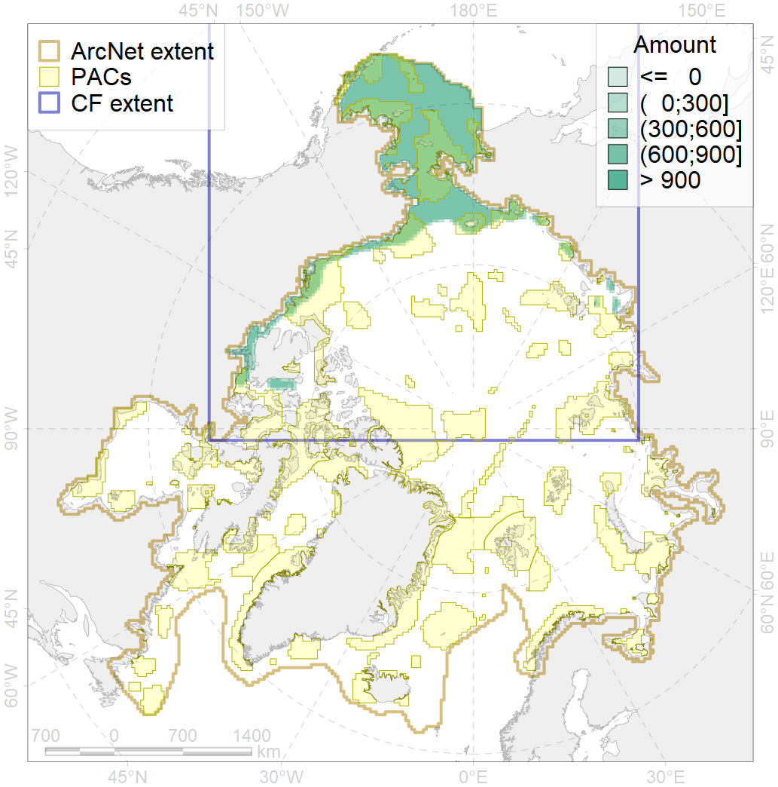
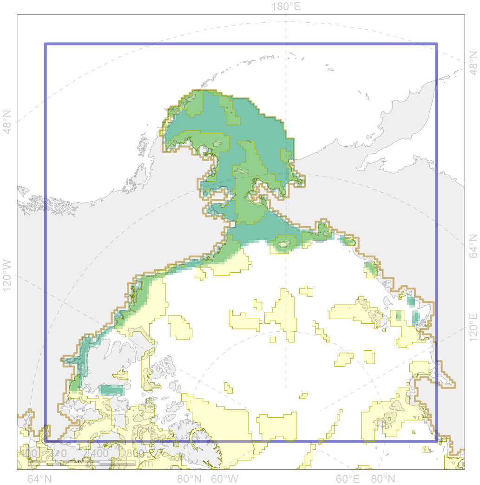

4042

| CF code | 4042 |
| CF name | Range of the Saffron cod (Eleginus gracilis) |
| Time Period | 1940s-2010s |
| Source(s) | Chernova, 2011; Coad Reist, 2018 |
| Seasonality | Jan-Dec |
| Depth Horizon | usually 0-300 m |
| Methodology | Compiled from literature sources based on field observations |
| Use Restrictions | Open access |
| Author Name | N. Chernova |
| Notes | Chernova (2011) compiled the data of: Svetovidov, 1948; McAllister, 1963; Svetovidov, 1986; Barber et al., 1990; Coad, Reist, 2004; Mecklenburg et al., 2010 |
| Scenario’s Target | 0.06 |
| Target Achievement | 0.407 (Scenario: 677.9%) |
| PAC | Share of the Total Amount within the PAC | Share of the Target Achievement for the ArcNet | PAC’s Contribution to the Target Achievement |
|---|---|---|---|
| 1 | 3.4% | 54.7% | 8.1% |
| 2 | 2.8%3.3% | 37.8%39.9% | 5.6%5.9% |
| 3 | 6.4%7.0% | 98.7%106.2% | 14.6%15.7% |
| 4 | 1.3%1.5% | 17.0%20.0% | 2.5%3.0% |
| 5 | 14.1%14.5% | 215.4%221.2% | 31.8%32.6% |
| 6 | 0.0%0.1% | 0.5%1.6% | 0.1%0.2% |
| 7 | 2.0% | 33.4% | 4.9% |
| 8 | 1.7%1.7% | 23.7%23.7% | 3.5%3.5% |
| 9 | 0.2%0.2% | 2.5%2.5% | 0.4%0.4% |
| 10 | 0.5%0.5% | 6.6%6.7% | 1.0%1.0% |
| 12 | 0.1% | 1.4% | 0.2% |
| 60 | 3.1%3.3% | 44.4%45.9% | 6.6%6.8% |
| 61 | 0.1% | 0.9% | 0.1% |
| 62 | 3.5%3.7% | 54.6%56.1% | 8.1%8.3% |
| 65 | 0.7%0.8% | 10.9%12.1% | 1.6%1.8% |
| inner | 39.9%42.3% | 602.4%626.2% | 88.9%92.4% |
| outer | 60.1%67.1% | 75.5%168.9% | 11.1%24.9% |
| † supplement values are for area consistence whereas principal values are for Accenter compatible gridded stats |